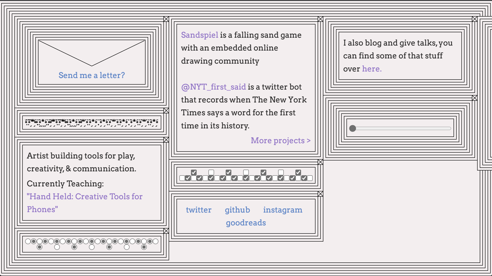

Assignment 1
Max Bittker-Portfolio
1) What was the first thing you paid attention to when interacting with the experience?
The first thing which I paid attention to when interacting with Max Bittkers portfolio, is the layout of the interaction, with the lined border, the moving panel of stars and dots, as well as the five panels containing links to different tools and activities which can be done on the page.
2) Spend two minutes with the experience and create a list of each of your discrete actions.
- Clicking the dots to change the colours from white to grey and grey to white.
- Playing with the falling sand game
- Dragging and clicking different materials when playing the falling sand game
- Dragging the small panel to change the border from square to round.
3) What part of the experience did you spend the most time engaging with?
The experience which I spent most of my time engaging with within Max Bittkers portfolio was the falling sand game.
4) What was the most common action in your two minute interaction with the experience?
The most common action that was made was clicking onto different materials within the falling sand game and dragging the materials across the page in order to discover how each material reacts with one another.
5) What is your impression of the intended primary goal of the interactive experience?
I believe the intended primary goal of the experience was to provide a sense of interaction and communication with users. I also feel as if the experience gives a different perception on how the world works through the lens of a computer.
6) What is your impression of how the interactive experience communicates its primary goal?
I feel as if the interactive experience can clearly communicate its primary goal as the experience is able to translate this idea of world perception, further enriching a place that can generate new and additional ideas and place them into Max’s perspective.
7) What is your impression of how the experience should be interacted with over time? (For how long and how many different times)
My impression is that the experience should be interacted with for a consistent period. Since there are many different parts that are interactable within the experience, a user can continuously access the page for a long time and consistently many different times.
8) What is your impression of how the interactive experience communicates how it should be interacted with over time?
Since the experience is constantly trying to interpret new ideas, I feel as if the experience communicates the fact that it should be interacted with overtime in order to discover new ideas that Max wishes to display to users.

9) What other media forms (digital or otherwise) does the experience reference?
The experience references other personal blogs and talks in which Max has created, as well as artists building tools for play and communication.
10) What does this reference or references suggest to you about how you should act when engaging with it?
The references suggest the fact that the portfolio is providing a way to discover different experiences to their user, in order to ascertain new ideas in which max may wish to communicate to us.
11) What does this reference or references suggest to you about how you should feel when engaging with it?
The references provided suggests that I should feel almost curious when interacting with it, as some may provide me with the feeling of a better sense of knowledge while other references provide a more interactive experience.
12) What is the most frustrating element of the interaction to you and what makes it frustrating?
The most frustrating element of the interaction is the fact that once I send a letter to max, I cannot re send a new one without having to exit the screen and re-clicking on the link.
13) What is the most satisfying element of the interaction to you and what makes it satisfying?
The most satisfying element would be the falling sand game, due to the fact that the more I interact with it the I become more curious about what each element can provide without feeling bored.